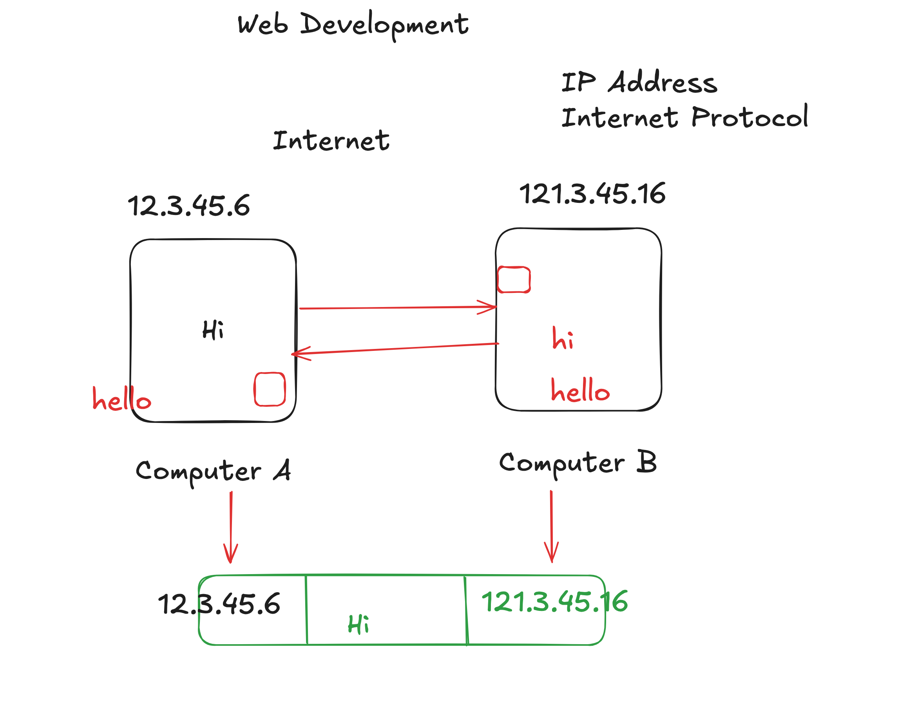
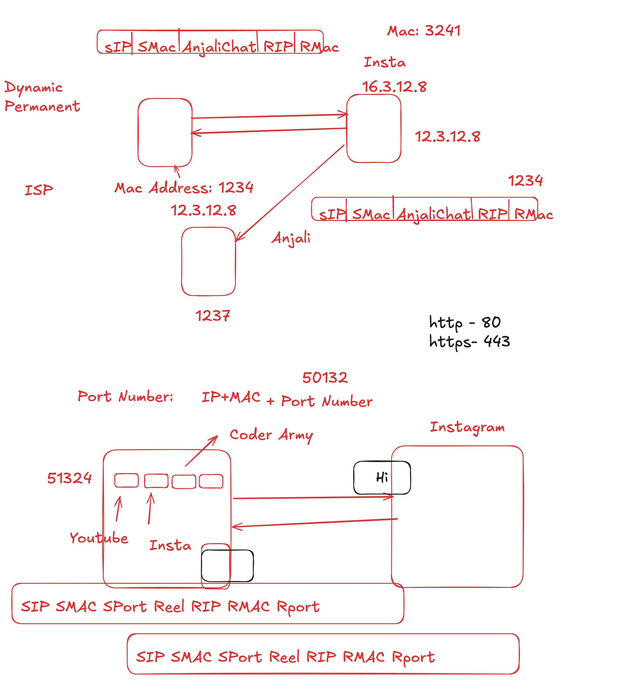

Lecture 1: Introduction To Web Development & Internet Working
Lecture Video
My Key Takeaways
This lecture covered the fundamental building blocks of the internet. Here are my key takeaways and diagrams from the class.
Core Concepts:
|
 |
Core Concepts:
|
 |
Important Port Numbers for Developers:
|
Official Lecture Notes (From First Principles)
The internet can be understood by solving a series of logical problems.
- Problem 1: Share data between two computers. Solution: A direct physical link.
- Problem 2: Connect many computers. Solution: A local network with a central switch.
- Problem 3: Connect many networks. Solution: An "internetwork" connected by routers.
- Problem 4: Find a specific computer. Solution: A universal IP Address for every device.
- Problem 5: Send data reliably. Solution: TCP/IP, a set of rules to break data into small, addressed packets.
The DNS Process
DNS translates human-friendly domain names (www.google.com) into computer-friendly IP addresses (142.250.72.206). The process works like this:
- Your computer checks its local cache (browser, OS, router) to see if it already knows the IP.
- If not, it asks a Recursive Resolver (usually your ISP's server) to find the answer.
- The resolver queries the global DNS hierarchy: first a Root Server, then a TLD Server (for .com), and finally the domain's Authoritative Name Server, which gives the final IP address.
Code Examples from this Lecture
To find your MAC address on Windows, you can use these Command Prompt commands.
|
To see all network configuration details: |
To see only the MAC addresses: |